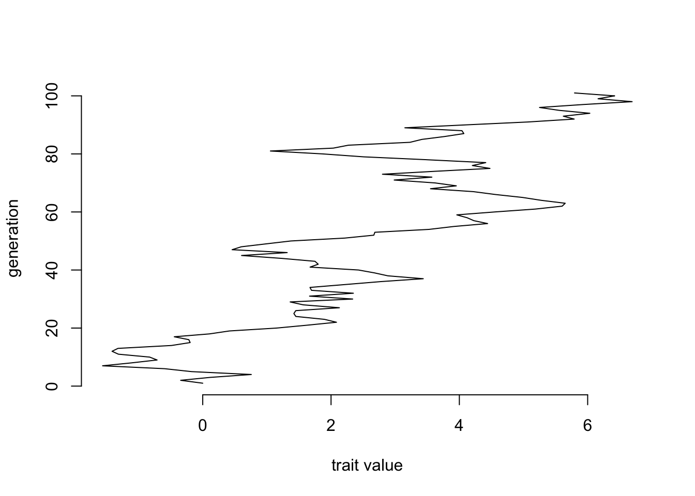
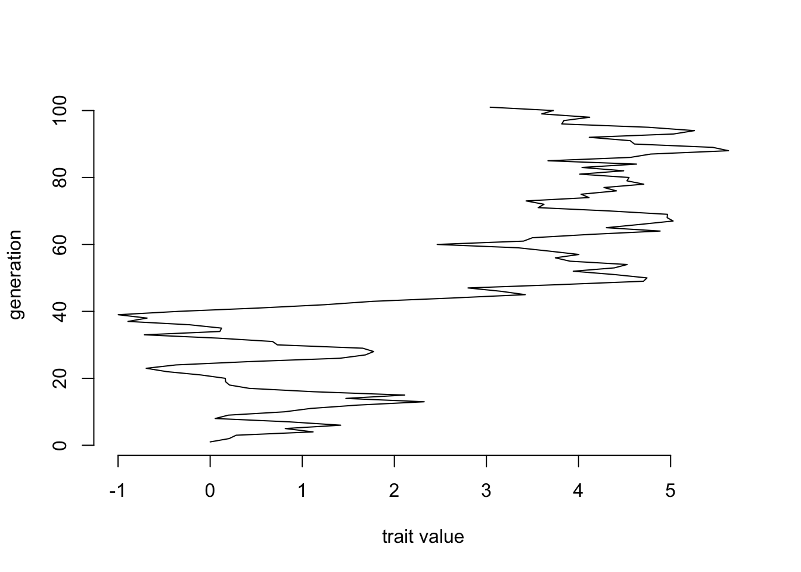
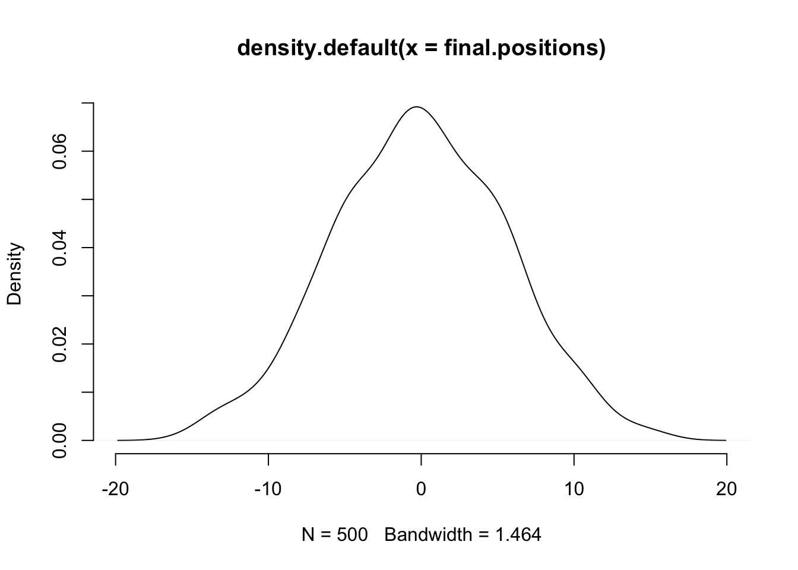
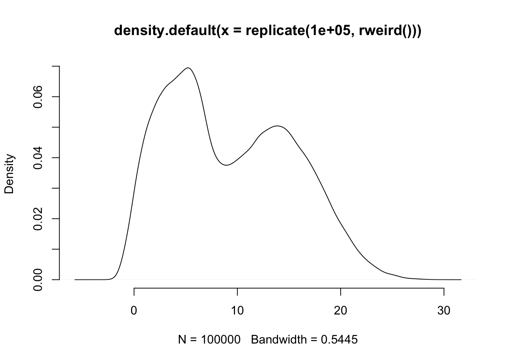
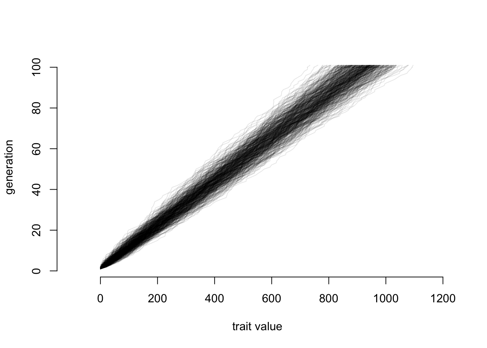
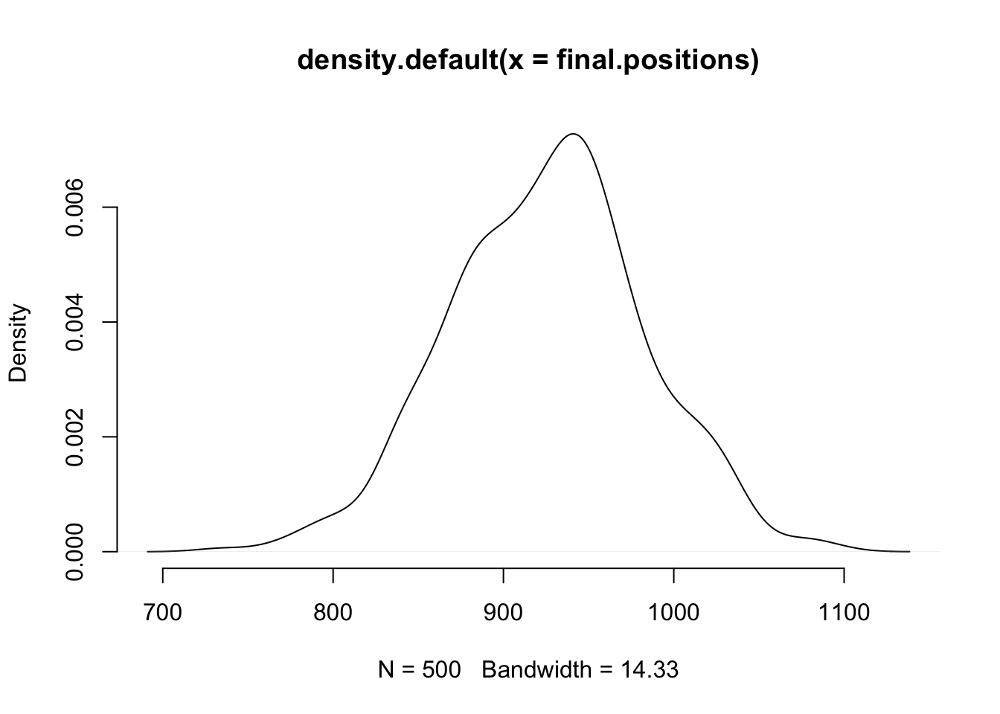
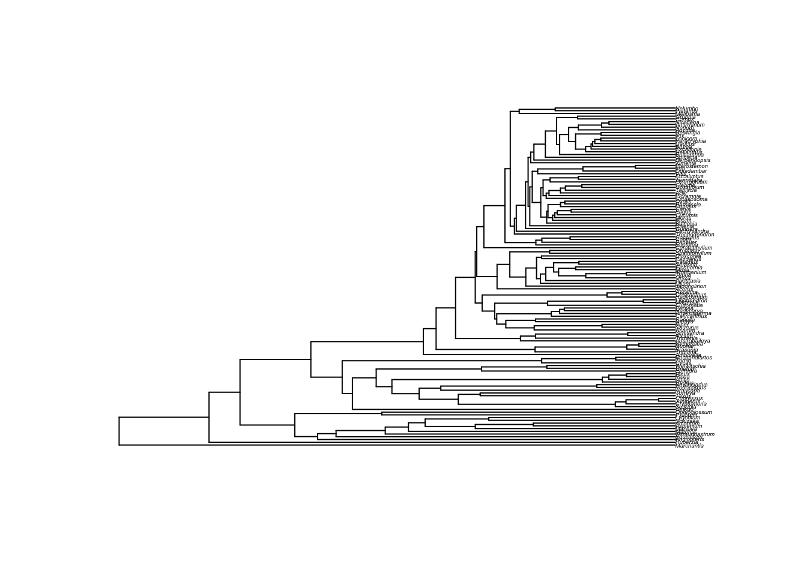

Chapter 9 Brownian Motion and Correlations
In progress
9.1 Objectives
By the end of this chapter, you will:
- Understand the importance of dealing with correlations in an evolutionary manner
- Know methods for looking at correlations of continuous and discrete traits
- Be able to point to reasons to be concerned.
Make sure to read the relevant papers: https://www.mendeley.com/groups/8111971/phylometh/papers/added/0/tag/week6/
9.2 Brownian motion
First, let’s get a tree:
library(rotl)
library(ape)
phy <- get_study_tree("ot_485", "tree1")
plot(phy, cex=0.5)
axisPhylo(backward=TRUE)
Note that this tree is a chronogram.
Let’s simulate data on this tree. But what model to use? For now, let’s assume we are looking at continuous traits, things like body size. Over evolutionary time, these probably undergo a series of changes that then get added up. A species has an average mass of 15 kg, then it goes to 15.1 kg, then 14.8 kg, and so forth. But how could those changes be distributed?
Start with a uniform distribution. Take a starting value of 0, then pick a number from -1 to 1 to add to it (in other words, runif(n=1, min=-1, max=1)). There are efficient ways to do this for many generations, but let’s do the obvious way: a simple for loop. Do it for 100 generations.
ngen <- 100
positions <- c(0, rep(NA,ngen))
for (i in sequence(ngen)) {
positions[i+1] <- positions[i] + runif(1,-1,1)
}
plot(x=positions, y=sequence(length(positions)), xlab="trait value", ylab="generation", bty="n", type="l")
We can repeat this simulation many times and see what the pattern looks like:
ngen <- 100
nsims <- 500
final.positions <- rep(NA, nsims)
# make a plot to hold our lines
plot(x=c(-1,1)*ngen, y=c(1, 1+ngen), xlab="trait value", ylab="generation", bty="n", type="n")
for (sim.index in sequence(nsims)) {
positions <- c(0, rep(NA,ngen))
for (i in sequence(ngen)) {
positions[i+1] <- positions[i] + runif(1,-1,1)
}
lines(positions, sequence(length(positions)), col=rgb(0,0,0,0.1))
final.positions[sim.index] <- positions[length(positions)]
}
Well, that may seem odd: we’re adding a bunch of uniform random values between -1 and 1 (so, a flat distribution) and we get something that definitely has more lines ending up in the middle than further out. Look just at the distribution of final points:
plot(density(final.positions), col="black", bty="n")
Which looks almost normal. Ok, let’s try a weird distribution:
rweird <- function() {
displacement <- 0
if(runif(1,-2,2) < .1) {
displacement <- rnorm(1, 7, 3) + runif(1,0,7)
} else {
displacement <- 0.5 * rexp(1, 0.3) - 1
}
displacement <- displacement + round(runif(1,1,100) %% 7)
return(displacement)
}
plot(density(replicate(100000, rweird())), bty="n")
When we ask rweird() for a number it sometimes gives us a normally distributed number multiplied by a unifor distribution, other times it gives us an exponentially distributed number, and then adds the remainder that comes when you divide a random number by 7. So, not exactly a simple distribution like uniform, normal, or Poisson. So, repeating the simulation above but using this funky distribution:
ngen <- 100
nsims <- 500
final.positions <- rep(NA, nsims)
# make a plot to hold our lines
plot(x=c(-100,1200), y=c(1, 1+ngen), xlab="trait value", ylab="generation", bty="n", type="n")
for (sim.index in sequence(nsims)) {
positions <- c(0, rep(NA,ngen))
for (i in sequence(ngen)) {
positions[i+1] <- positions[i] + rweird()
}
lines(positions, sequence(length(positions)), col=rgb(0,0,0,0.1))
final.positions[sim.index] <- positions[length(positions)]
}
And now let’s look at final positions again:
plot(density(final.positions), col="black", bty="n")
Again, it looks pretty much like a normal distribution. You can try with your own wacky distribution, and this will almost always happen (as long as the distribution has finite variance).
Why?
Well, think back to stats: why do we use the normal distribution for so much?
Answer: the central limit theorem. The sum (or, equivalently, average) of a set of numbers pulled from distributions that each have a finite mean and finite variance will approximate a normal distribution. The numbers could all be independent and come from the same probability distribution (i.e., could take numbers from the same Poisson distribution), but this isn’t required.
Biologically, the technical term for this is awesome. We know something like a species mean changes for many reasons: chasing an adaptive peak here, drifting there, mutation driving a it this way or that, etc. If there are enough shifts, where a species goes after many generations is normally distributed. For two species, there’s one normal distribution for their evolution from the origin of life (or the start of the tree we’re looking at) to their branching point (so they have identical history up to then) then each evolves from that point independently (though of course in reality they may interact; the method that’s part of the grant supporting this course allows for this). So they have covariance due to the shared history, then accumulate variance independently after the split. We thus use a multivariate normal for multiple species on the tree (for continuous traits), but it again is due to Brownian motion. This mixture of independent and shared evolution is quite important: it explains why species cannot be treated as independent data points, necessitating the correlation methods that use a phylogeny in this week’s lessons.
However, in biological data there are (at least) two issues. One is that in some ways a normal distribution is weird: it says that for the trait of interest, there’s a positive probability for any value from negative infinity to positive infinity. “Endless forms most beautiful and most wonderful have been, and are being, evolved” [Darwin] but nothing is so wonderful as to have a mass of -15 kg (or, for that matter, 1e7 kg). Under Brownian motion, we expect a displacement of 5 g to have equal chance no matter what the starting mass, but in reality a shrew species that has an average mass of 6 g is less likely to lose 5 g over one million years than a whale species that has an average adult mass of 100,000,000 g. Both difficulties go away if we think of the displacements not coming as an addition or subtraction to a species’ state but rather a multiplying of a state: the chance of a whale or a shrew increasing in mass by 1% per million years may be the same, even if their starting mass magnitudes are very different. Conveniently, this also prevents us getting zero or lower for a mass (or other trait being examined). This works if we use the log of the species trait and treat that as evolving under Brownian motion, and this is why traits are commonly transformed in this way in phylogenetics (as well they should be).
The other issue is that the normal approximation might not hold. For example, if species are being pulled back towards some fixed value, the net displacement is not a simple sum of the displacements: we keep getting pulled back, in effect eroding the influence of movements the deeper they are in the past: thus the utility of Ornstein-Uhlenbeck models. There may also be a set of displacements that all come from one model, then a later set of displacements that all come from some different model: we could better model evolution, especially correlation between species, by using these two (or more) models rather than assume the same normal distribution throughout time: thus the utility of approaches that allow different parameters or even different models on different parts of the tree.
9.3 Correlation
For this week, bring your data and a tree for those taxa. Fork https://github.com/PhyloMeth/Correlation and then add scripts there. When you’re done, do a pull request. Note if you add data to that directory and commit it, it’ll be uploaded to public GitHub. Probably not a big deal, unless you want to keep your data secret and safe (Lord of The Rings reference; c.f. phangorn package).
Do independent contrasts using pic() in ape. Remember to 1) positivize the contrasts (this is not the same as doing abs()). From the Garland et al. paper, think about ways to see if there are any problems. How do contrasts affect the correlations?
Do Pagel94
There are at least three ways to do this in R: in the phytools, diversitree, and corHMM packages. With phytools, it’s pretty simple: use the fitPagel() function. With the others, you have to specify the constraint matrices (this allows you to do Pagel-style tests but on a wider range of models). Think about what you should assume at the root state: canonical Pagel94 assumes equal probabilities of each state at the root, but that might be a bad assumption for your taxa.
Use another correlation method
Perhaps phyloGLM? Use the phylolm package, or some other approach to look at correlations.